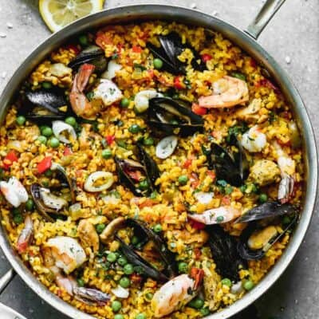

You can make a delicious, authentic Paella–the most popular dish of Spain–in your own kitchen with simple ingredients like rice, saffron, vegetables, chicken, and seafood. If you love cooking International food, you will fall in love with this comforting dish!